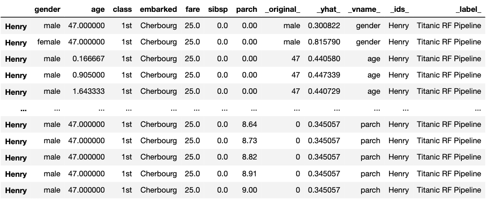

10 Ceteris-paribus Profiles
10.1 Introduction
Chapters 6–9 focused on the methods that quantified the importance of explanatory variables in the context of a single-instance prediction. Their application yields a decomposition of the prediction into components that can be attributed to particular variables. In this chapter, we focus on a method that evaluates the effect of a selected explanatory variable in terms of changes of a model’s prediction induced by changes in the variable’s values. The method is based on the ceteris paribus principle. “Ceteris paribus” is a Latin phrase meaning “other things held constant” or “all else unchanged.” The method examines the influence of an explanatory variable by assuming that the values of all other variables do not change. The main goal is to understand how do changes in the values of the variable affect the model’s predictions.
Explanation tools (explainers) presented in this chapter are linked to the second law introduced in Section 1.2, i.e., the law of “Prediction’s speculation.” This is why the tools are also known as “What-if” model analysis or Individual Conditional Expectations (Goldstein et al. 2015). It appears that it is easier to understand how does a black-box model work if we can explore the model by investigating the influence of explanatory variables separately, changing one at a time.
10.2 Intuition
Ceteris-paribus (CP) profiles show how a model’s prediction would change if the value of a single exploratory variable changed. In essence, a CP profile shows the dependence of the conditional expectation of the dependent variable (response) on the values of the particular explanatory variable. For example, panel A of Figure 10.1 presents response (prediction) surface for two explanatory variables, age and class, for the logistic regression model titanic_lmr (see Section 4.2.1) for the Titanic dataset (see Section 4.1). We are interested in the change of the model’s prediction for passenger Henry (see Section 4.2.5) induced by each of the variables. Toward this end, we may want to explore the curvature of the response surface around a single point with age equal to 47 and class equal to “1st”, indicated in the plot. CP profiles are one-dimensional plots that examine the curvature across each dimension, i.e., for each variable. Panel B of Figure 10.1 presents the CP profiles for age and class. Note that, in the CP profile for age, the point of interest is indicated by the dot. The plots for both variables suggest that the predicted probability of survival varies considerably for different ages and classes.

Figure 10.1: Panel A) shows the model response (prediction) surface for variables age and class. Ceteris-paribus (CP) profiles are conditional, one-dimensional plots that are marked with black curves. They help to understand the changes of the curvature of the surface induced by changes in only a single explanatory variable. Panel B) CP profiles for individual variables, age (continuous) and class (categorical).
10.3 Method
In this section, we introduce more formally one-dimensional CP profiles. Recall (see Section 2.3) that we use \(\underline{x}_i\) to refer to the vector of values of explanatory variables corresponding to the \(i\)-th observation in a dataset. A vector with arbitrary values (not linked to any particular observation in the dataset) is denoted by \(\underline{x}_*\). Let \(x^{j}_{*}\) denote the \(j\)-th element of \(\underline{x}_{*}\), i.e., the value of the \(j\)-th explanatory variable. We use \(\underline{x}^{-j}_{*}\) to refer to a vector resulting from removing the \(j\)-th element from \(\underline{x}_{*}\). By \(\underline{x}^{j|=z}_{*}\), we denote a vector resulting from changing the value of the \(j\)-th element of \(\underline{x}_{*}\) to (a scalar) \(z\).
We define a one-dimensional CP profile \(h()\) for model \(f()\), the \(j\)-th explanatory variable, and point of interest \(\underline{x}_*\) as follows:
\[\begin{equation} h^{f,j}_{\underline{x}_*}(z) \equiv f\left(\underline{x}_*^{j|=z}\right). \tag{10.1} \end{equation}\]
CP profile is a function that describes the dependence of the (approximated) conditional expected value (prediction) of \(Y\) on the value \(z\) of the \(j\)-th explanatory variable. Note that, in practice, \(z\) assumes values from the entire observed range for the variable, while values of all other explanatory variables are kept fixed at the values specified by \(\underline{x}_*\).
Note that, in the situation when only a single model is considered, we will skip the model index and we will denote the CP profile for the \(j\)-th explanatory variable and the point of interest \(\underline{x}_*\) by \(h^{j}_{\underline{x}_*}(z)\).
10.4 Example: Titanic data
For continuous explanatory variables, a natural way to represent the CP function (10.1) is to use a plot similar to one of those presented in Figure 10.2. In the figure, the dot on the curves marks the instance-prediction of interest, i.e., prediction \(f(\underline{x}_*)\) for a single observation \(\underline{x}_*\). The curve itself shows how would the prediction change if the value of a particular explanatory variable changed.
In particular, Figure 10.2 presents CP profiles for the age variable for the logistic regression model titanic_lmr and the random forest model titanic_rf for the Titanic dataset (see Sections 4.2.1 and 4.2.2, respectively). The instance of interest is passenger Henry, a 47-year-old man who travelled in the first class (see Section 4.2.5). It is worth observing that the profile for the logistic regression model is smooth, while the one for the random forest model is a step function with some variability. However, the general shape of the two CP profiles is similar. If Henry were a newborn, while keeping values of all other explanatory variables unchanged, his predicted survival probability would increase by about 40 percentage points for both models. And if Henry were 80-years old, the predictions would decrease by more than 10 percentage points.
Figure 10.2: Ceteris-paribus profiles for variable age for the logistic regression (titanic_lmr) and random forest (titanic_rf ) models that predict the probability of surviving of passenger Henry based on the Titanic data. Dots indicate the values of the variable and of the prediction for Henry.
For a categorical explanatory variable, a natural way to represent the CP function is to use a bar plot similar to one of those presented in Figure 10.3. In particular, the figure presents CP profiles for the class variable in the logistic regression and random forest models for the Titanic dataset (see Sections 4.2.1 and 4.2.2, respectively). For this instance (observation), passenger Henry, the predicted probability for the logistic regression model would decrease substantially if the value of class changed to “2nd” or “3rd.” On the other hand, for the random forest model, the largest change would be marked if class changed to “desk crew.”
Figure 10.3: Ceteris-paribus profiles for variable class for the logistic regression (titanic_lmr) and random forest (titanic_rf ) models that predict the probability of surviving of passenger Henry based on the Titanic data. Dots indicate the values of the variable and of the prediction for Henry.
Usually, black-box models contain a large number of explanatory variables. However, CP profiles are legible even for tiny subplots, if created with techniques like sparklines or small multiples (Tufte 1986). By using the techniques, we can display a large number of profiles, while at the same time keeping profiles for consecutive variables in separate panels, as shown in Figure 10.4 for the random forest model for the Titanic dataset. It helps if the panels are ordered so that the most important profiles are listed first. A method to assess the importance of CP profiles is discussed in the next chapter.
Figure 10.4: Ceteris-paribus profiles for all continuous explanatory variables for the random forest model titanic_rf for the Titanic dataset and passenger Henry. Dots indicate the values of the variables and of the prediction for Henry.
10.5 Pros and cons
One-dimensional CP profiles, as presented in this chapter, offer a uniform, easy to communicate, and extendable approach to model exploration. Their graphical representation is easy to understand and explain. It is possible to show profiles for many variables or models in a single plot. CP profiles are easy to compare, as we can overlay profiles for two or more models to better understand differences between the models. We can also compare two or more instances to better understand model-prediction’s stability. CP profiles are also a useful tool for sensitivity analysis.
However, there are several issues related to the use of the CP profiles. One of the most important ones is related to the presence of correlated explanatory variables. For such variables, the application of the ceteris paribus principle may lead to unrealistic settings and misleading results, as it is not possible to keep one variable fixed while varying the other one. For example, variables like surface and number of rooms, which can be used in prediction of an apartment’s price, are usually correlated. Thus, it is unrealistic to consider very small apartments with a large number of rooms. In fact, in a training dataset, there may be no such combinations. Yet, as implied by (10.1), to compute a CP profile for the number-of-rooms variable for a particular instance of a small-surface apartment, we should consider the model’s predictions \(f\left(\underline{x}_*^{j|=z}\right)\) for all values of \(z\) (i.e., numbers of rooms) observed in the training dataset, including large ones. This means that, especially for flexible models like, for example, regression trees, predictions for a large number of rooms \(z\) may have to be obtained by extrapolating the results obtained for large-surface apartments. Needless to say, such extrapolation may be problematic. We will come back to this issue in Chapters 17 and 18.
A somewhat similar issue is related to the presence of interactions in a model, as they imply the dependence of the effect of one variable on other one(s). Pairwise interactions require the use of two-dimensional CP profiles that are more complex than one-dimensional ones. Needless to say, interactions of higher orders pose even a greater challenge.
A practical issue is that, in case of a model with hundreds or thousands of variables, the number of plots to inspect may be daunting.
Finally, while bar plots allow visualization of CP profiles for factors (categorical explanatory variables), their use becomes less trivial in case of factors with many nominal (unordered) categories (like, for example, a ZIP-code).
10.6 Code snippets for R
In this section, we present CP profiles as implemented in the DALEX package for R. Note that presented functions are, in fact, wrappers to package ingredients (Biecek et al. 2019) with a simplified interface. There are also other R packages that offer similar functionalities, like condvis (O’Connell, Hurley, and Domijan 2017), pdp (Greenwell 2017), ICEbox (Goldstein et al. 2015), ALEPlot (Apley 2018), or iml (Molnar, Bischl, and Casalicchio 2018).
For illustration, we use two classification models developed in Chapter 4.1, namely the logistic regression model titanic_lmr (Section 4.2.1) and the random forest model titanic_rf (Section 4.2.2). They are developed to predict the probability of survival after sinking of Titanic. Instance-level explanations are calculated for Henry, a 47-year-old male passenger that travelled in the first class (see Section 4.2.5).
We first retrieve the titanic_lmr and titanic_rf model-objects and the data frame for Henry via the archivist hooks, as listed in Section 4.2.7. We also retrieve the version of the titanic data with imputed missing values.
titanic_imputed <- archivist::aread("pbiecek/models/27e5c")
titanic_lmr <- archivist::aread("pbiecek/models/58b24")
titanic_rf <- archivist::aread("pbiecek/models/4e0fc")
(henry <- archivist::aread("pbiecek/models/a6538")) class gender age sibsp parch fare embarked
1 1st male 47 0 0 25 CherbourgThen we construct the explainers for the model by using function explain() from the DALEX package (see Section 4.2.6). We also load the rms and randomForest packages, as the models were fitted by using functions from those packages and it is important to have the corresponding predict() functions available.
library("DALEX")
library("rms")
explain_lmr <- explain(model = titanic_lmr,
data = titanic_imputed[, -9],
y = titanic_imputed$survived == "yes",
type = "classification",
label = "Logistic Regression")
library("randomForest")
explain_rf <- DALEX::explain(model = titanic_rf,
data = titanic_imputed[, -9],
y = titanic_imputed$survived == "yes",
label = "Random Forest")10.6.1 Basic use of the predict_profile() function
The easiest way to create and plot CP profiles is to use the predict_profile() function and then apply the generic plot() function to the resulting object. By default, profiles for all explanatory variables are calculated, while profiles for all numeric (continuous) variables are plotted. One can limit the number of variables for which calculations and/or plots are necessary by using the variables argument.
To compute the CP profiles, the predict_profile() function requires arguments explainer, which specifies the name of the explainer-object, and new_observation, which specifies the name of the data frame for the instance for which prediction is of interest. As a result, the function returns an object of class “ceteris_paribus_explainer.” It is a data frame with the model’s predictions. Below we illustrate the use of the function for the random forest model.
## Top profiles :
## class gender age sibsp parch fare embarked _yhat_
## 1 1st male 47 0 0 25 Cherbourg 0.246
## 1.1 2nd male 47 0 0 25 Cherbourg 0.054
## 1.2 3rd male 47 0 0 25 Cherbourg 0.100
## 1.3 deck crew male 47 0 0 25 Cherbourg 0.454
## 1.4 engineering crew male 47 0 0 25 Cherbourg 0.096
## 1.5 restaurant staff male 47 0 0 25 Cherbourg 0.092
## _vname_ _ids_ _label_
## 1 class 1 Random Forest
## 1.1 class 1 Random Forest
## 1.2 class 1 Random Forest
## 1.3 class 1 Random Forest
## 1.4 class 1 Random Forest
## 1.5 class 1 Random Forest
##
##
## Top observations:
## class gender age sibsp parch fare embarked _yhat_ _label_
## 1 1st male 47 0 0 25 Cherbourg 0.246 Random Forest
## _ids_
## 1 1To obtain a graphical representation of CP profiles, the generic plot() function can be applied to the data frame returned by the predict_profile() function. It returns a ggplot2 object that can be processed further if needed. In the examples below, we use the ggplot2 functions like ggtitle() or ylim() to modify the plot’s title or the range of the y-axis.
Below we show the code that can be used to create plots similar to those presented in the upper part of Figure 10.4. By default, the plot() function provides a graph with plots for all numerical variables. To limit the display to variables age and fare, the names of the variables are provided in the variables argument. The resulting plot is shown in Figure 10.5.
library("ggplot2")
plot(cp_titanic_rf, variables = c("age", "fare")) +
ggtitle("Ceteris-paribus profile", "") + ylim(0, 0.8)
Figure 10.5: Ceteris-paribus profiles for variables age and fare and the titanic_rf random forest model for the Titanic data. Dots indicate the values of the variables and of the prediction for Henry.
To plot CP profiles for categorical variables, we have got to add the variable_type = "categorical" argument to the plot() function. In that case, we can use the categorical_type argument to specify whether we want to obtain a plot with "lines" (default) or "bars". In the code below, we also use argument variables to indicate that we want to create plots only for variables class and embarked. The resulting plot is shown in Figure 10.6.
plot(cp_titanic_rf, variables = c("class", "embarked"),
variable_type = "categorical", categorical_type = "bars") +
ggtitle("Ceteris-paribus profile", "")
Figure 10.6: Ceteris-paribus profiles for variables class and embarked and the titanic_rf random forest model for the Titanic data. Dots indicate the values of the variables and of the prediction for Henry.
10.6.2 Advanced use of the predict_profile() function
The predict_profile() function is very flexible. To better understand how can it be used, we briefly review its arguments:
explainer,data,predict_function,label- they provide information about the model. If the object provided in theexplainerargument has been created with theDALEX::explain()function, then values of the other arguments are extracted from the object; this is how we use the function in this chapter. Otherwise, we have got to specify directly the model-object, the data frame used for fitting the model, the function that should be used to compute predictions, and the model label.new_observation- a data frame with data for instance(s), for which we want to calculate CP profiles, with the same variables as in the data used to fit the model. Note, however, that it is best not to include the dependent variable in the data frame, as they should not appear in plots.y- the observed values of the dependent variable corresponding tonew_observation. The use of this argument is illustrated in Section 12.1.variables- names of explanatory variables, for which CP profiles are to be calculated. By default,variables = NULLand the profiles are constructed for all variables, which may be time consuming.variable_splits- a list of values for which CP profiles are to be calculated. By default,variable_splits = NULLand the list includes all values for categorical variables and uniformly-placed values for continuous variables; for the latter, one can specify the number of the values with thegrid_pointsargument (by default,grid_points = 101).
The code below uses argument variable_splits to specify that CP profiles are to be calculated for age and fare, together with the list of values at which the profiles are to be evaluated.
variable_splits = list(age = seq(0, 70, 0.1),
fare = seq(0, 100, 0.1))
cp_titanic_rf <- predict_profile(explainer = explain_rf,
new_observation = henry,
variable_splits = variable_splits)Subsequently, to replicate the plots presented in the upper part of Figure 10.4, a call to function plot() can be used as below. The resulting plot is shown in Figure 10.5.
Figure 10.7: Ceteris-paribus profiles for variables class and embarked and the titanic_rf random forest model. Blue dots indicate the values of the variables and of the prediction for Henry.
In the example below, we present the code to create CP profiles for two passengers, Henry and Johnny D (see Section 4.2.5), for the random forest model titanic_rf (Section 4.2.2). Toward this end, we first retrieve the johnny_d data frame via the archivist hook, as listed in Section 4.2.7. We then apply the predict_profile() function with the explainer-object explain_rf specified in the explainer argument and the combined data frame for Henry and Johnny D used in the new_observation argument. We also use argument variable_splits to specify that CP profiles are to be calculated for age and fare, together with the list of values at which the profiles are to be evaluated.
## class gender age sibsp parch fare embarked
## 1 1st male 8 0 0 72 Southamptoncp_titanic_rf2 <- predict_profile(explainer = explain_rf,
new_observation = rbind(henry, johnny_d),
variable_splits = variable_splits)To create the plots of CP profile, we apply the plot() function. We use the scale_color_manual() function to add names of passengers to the plot, and to control colors and positions.
library(ingredients)
plot(cp_titanic_rf2, color = "_ids_", variables = c("age", "fare")) +
scale_color_manual(name = "Passenger:", breaks = 1:2,
values = c("#4378bf", "#8bdcbe"),
labels = c("henry" , "johny_d")) The resulting graph, which includes CP profiles for Henry and Johnny D, is presented in Figure 10.8. For Henry, the predicted probability of survival is smaller than for Johnny D, as seen from the location of the large dots on the profiles. The profiles for age indicate a somewhat larger effect of the variable for Henry, as the predicted probability, in general, decreases from about 0.6 to 0.1 with increasing values of the variable. For Johny D, the probability changes from about 0.45 to about 0.05, with a bit less monotonic pattern. For fare, the effect is smaller for both passengers, as the probability changes within a smaller range of about 0.2. For Henry, the changes are approximately limited to the interval [0.1,0.3], while for Johnny D they are limited to the interval [0.4,0.6].
Figure 10.8: Ceteris-paribus profiles for the titanic_rf model. Profiles for different passengers are color-coded. Dots indicate the values of the variables and of the predictions for the passengers.
10.6.3 Comparison of models (champion-challenger)
One of the most interesting uses of the CP profiles is the comparison for two or more of models.
To illustrate this possibility, first, we have to construct profiles for the models. In our illustration, for the sake of clarity, we limit ourselves to the logistic regression (Section 4.2.1) and random forest (Section 4.2.2) models for the Titanic data. Moreover, we use Henry as the instance for which predictions are of interest. We apply the predict_profile() function to compute the CP profiles for the two models.
cp_titanic_rf <- predict_profile(explain_rf, henry)
cp_titanic_lmr <- predict_profile(explain_lmr, henry)Subsequently, we construct the plot with the help of the plot() function. Note that, for the sake of brevity, we use the variables argument to limit the plot only to profiles for variables age and class. Every plot() function can take a collection of explainers as arguments. In such case, profiles for different models are combined in a single plot. In the code presented below, argument color = "_label_" is used to specify that models are to be color-coded. The _label_ refers to the name of the column in the CP explainer that contains the model’s name.
plot(cp_titanic_rf, cp_titanic_lmr, color = "_label_",
variables = c("age", "fare")) +
ggtitle("Ceteris-paribus profiles for Henry", "") The resulting plot is shown in Figure 10.9. For Henry, the predicted probability of survival is higher for the logistic regression model than for the random forest model. CP profiles for age show a similar shape, however, and indicate decreasing probability with age. Note that this relation is not linear because we used spline transformation for the age variable, see Section 4.2.1. For fare, the profile for the logistic regression model suggests a slight increase of the probability, while for the random forest a decreasing trend can be inferred. The difference between the values of the CP profiles for fare increases with the increasing values of the variable. We can only speculate what is the reason for the difference. Perhaps the cause is the correlation between the ticket fare and class. The logistic regression model handles the dependency of variables differently than the random forest model.
Figure 10.9: Comparison of the ceteris-paribus profiles for Henry for the logistic regression and random forest models. Profiles for different models are color-coded. Dots indicate the values of the variables and of the prediction for Henry.
10.7 Code snippets for Python
In this section, we use the dalex library for Python. The package covers all methods presented in this chapter. It is available on pip and GitHub.
For illustration purposes, we use the titanic_rf random forest model for the Titanic data developed in Section 4.3.2. Recall that the model is developed to predict the probability of survival for passengers of Titanic. Instance-level explanations are calculated for Henry, a 47-year-old passenger that travelled in the 1st class (see Section 4.3.5).
In the first step, we create an explainer-object that will provide a uniform interface for the predictive model. We use the Explainer() constructor for this purpose.
import pandas as pd
henry = pd.DataFrame({'gender' : ['male'],
'age' : [47],
'class' : ['1st'],
'embarked': ['Cherbourg'],
'fare' : [25],
'sibsp' : [0],
'parch' : [0]},
index = ['Henry'])
import dalex as dx
titanic_rf_exp = dx.Explainer(titanic_rf, X, y,
label = "Titanic RF Pipeline")To calculate the CP profile we use the predict_profile() method. The first argument is the data frame for the observation for which the attributions are to be calculated. Results are stored in the results field.

The resulting object can be visualised by using the plot() method. By default, CP profiles for all continuous variables are plotted. To select specific variables, a vector with the names of the variables can be provided in the variables argument. In the code below, we select variables age and fare. The resulting plot is shown in Figure 10.10.
Figure 10.10: Ceteris-paribus profiles for continuous explanatory variables age and fare for the random forest model for the Titanic data and passenger Henry. Dots indicate the values of the variables and of the prediction for Henry.
To plot profiles for categorical variables, we use the variable_type = 'categorical' argument. In the code below, we limit the plot to variables class and embarked. The resulting plot is shown in Figure 10.11.
Figure 10.11: Ceteris-paribus profiles for categorical explanatory variables class and embarked for the random forest model for the Titanic data and passenger Henry.
You can place Ceteris-paribus profiles for several models on a single chart. Simply add them as further arguments for the plot function. See an example below. The resulting plot is shown in Figure 10.12.
cp_henry2 = titanic_lr_exp.predict_profile(henry)
cp_henry.plot(cp_henry2, variables = ['age', 'fare'])
Figure 10.12: Ceteris-paribus profiles for logistic regression model and random forest model for the Titanic data and passenger Henry.
References
Apley, Dan. 2018. ALEPlot: Accumulated Local Effects (Ale) Plots and Partial Dependence (Pd) Plots. https://CRAN.R-project.org/package=ALEPlot.
Biecek, Przemyslaw, Hubert Baniecki, Adam Izdebski, and Katarzyna Pekala. 2019. ingredients: Effects and Importances of Model Ingredients. https://github.com/ModelOriented/ingredients.
Goldstein, Alex, Adam Kapelner, Justin Bleich, and Emil Pitkin. 2015. “Peeking Inside the Black Box: Visualizing Statistical Learning with Plots of Individual Conditional Expectation.” Journal of Computational and Graphical Statistics 24 (1): 44–65. https://doi.org/10.1080/10618600.2014.907095.
Greenwell, Brandon M. 2017. “pdp: An R Package for Constructing Partial Dependence Plots.” The R Journal 9 (1): 421–36. https://journal.r-project.org/archive/2017/RJ-2017-016/index.html.
Molnar, Christoph, Bernd Bischl, and Giuseppe Casalicchio. 2018. “iml: An R package for Interpretable Machine Learning.” Journal of Open Source Software 3 (26): 786. https://doi.org/10.21105/joss.00786.
O’Connell, Mark, Catherine Hurley, and Katarina Domijan. 2017. “Conditional Visualization for Statistical Models: An Introduction to the condvis Package in R.” Journal of Statistical Software, Articles 81 (5): 1–20. https://doi.org/10.18637/jss.v081.i05.
Tufte, Edward R. 1986. The Visual Display of Quantitative Information. Cheshire, CT, USA: Graphics Press.